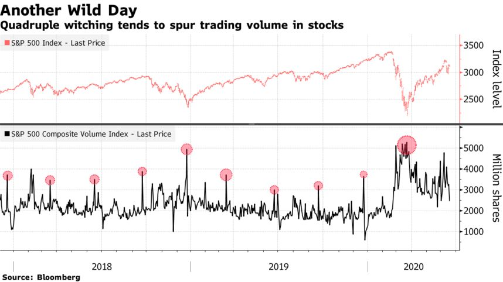

讓我們為您解答四巫日是什麼！最新2021年四巫日
如果你有在做海外期貨，尤其是操作美股指數期貨，或者是許多有在關注美股的投資朋友，
就一定要關心一下結算日！美股期貨重要結算日是哪天？小道瓊期貨什麼時候結算?
每三個月總會提出來討論的四巫日是什麼？三巫日？又有人說四巫日會有轉折？四巫日崩盤？讓我們來為你一一解答！
四巫日（Quadruple witching day）是指美國市場於季月（三月、六月、九月、十二月）第三個星期五之衍生性金融商品到期結算日，
預期中商品價格會有較大的波動。而當日最後交易小時稱為四巫小時（英語：Quadruple witching hour），為紐約時間下午三時至四時。
到期結算的商品共有四類，故稱四巫日：
- 股票指數期貨（EX.小道瓊期貨、小那斯達克期貨、小S&P期貨）
- 股票指數選擇權
- 個股期貨
- 個股選擇權
從2002年11月8日起，美國市場才開始交易個股期貨，故在此之前稱為三巫日（英語：Triple witching day）。以上資料來源:維基百科
最新2021年四巫日:
2021年03月19日(五)
2021年06月18日(五)
2021年09月17日(五)
2021年12月17日(五)
美股指數期貨是以結算日之SOQ Special Opening Quotation
(各成份股之實際開盤價計算。注意！因部份成份股可能數秒、數分甚至數小時後才有交易，即SOQ會與開盤時之現貨指數不相同)
，若其中成份股沒有交易，將以其最後之委賣價計算。
簡單來說，美股指數期貨在美股現貨開盤時（夏令：台灣時間晚上21:30、冬令：台灣時間晚上22:00）就停止交易，
而台股指數期貨則是交易到收到收尾（但一般來說13:00過後就沒什麼波動）。
四巫日對美股的影響
四巫日，對美股會有哪些影響？下圖是近 3 年四巫日發生時的美國 S&P 500 變化：
▲ 圖片擷取自：Source/Bloomberg
再來談談「四巫日」行情，一般來說會有兩大特性
特性 1：四巫日當天成交量會放大
因為快接近結算時，近月合約與遠月合約仍然可以交易，而交易週期較長的交易人，會開始進行換倉，也就是平倉近月合約、建倉遠月合約。
但其實不會在最後一天才開始成交量放大，你可以從下圖看出，在結算日前一周開始，近月合約的交易量就會開始減少，而遞補上來就是遠月合約。
特性 2：四巫過後，行情可能會發生轉折？
市場上有一種說法，由於季度合約到期後，下個合約遠在一季之後，而且四巫日當日因為爆量的緣故會發生籌碼換手，
因此結算日附近的點位可能就是波段高點或低點，可能出現反轉跡象。
嗯…關於這一點我先打個問號。關於趨勢，我想還是回到策略以及本體上來討論。
但是你可以從這一、兩年的「四巫日」後的發展來觀察（標黃圈圈的為小道結算日）
了解過去的統計數據後，其實「四巫日」也沒這麼可怕。